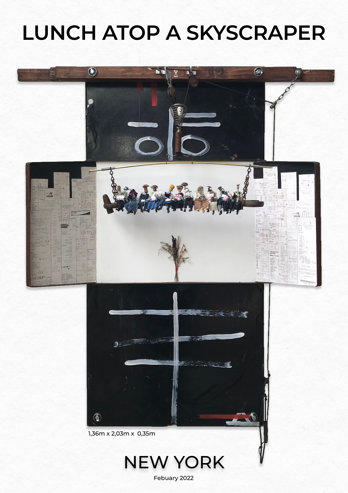

Lunch Atop a Skyscraper
A found material reconstruction of the famous construction worker image. The figures sit in the same arrangement on a suspended beam. Bills, metal, fabric, wire, tools, and street fragments turn the reference into a scene about labour, migration, precarity, and the dream of building upward.